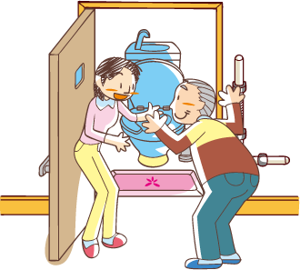
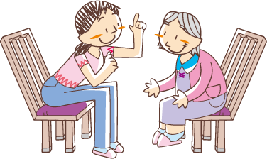

訪問介護「ホームヘルパー」について
介護保険法に基づく訪問介護サービスとは、ホームヘルパーが介護保険を利用する
方のお宅に訪問し、身体の介護や家事を中心とした生活の援助を行います。
在宅生活の手助けをすることを目的としています。
■身体介護・・・トイレ補助、入浴補助など
■生活援助・・・掃除、洗濯、食事の用意など
介護保険が使えるサービス

身体介護
- ・お食事のお手伝い
- ・トイレのお手伝い、おむつ交換
- ・服薬のお手伝い
- ・外出のお手伝い
- ・お風呂のお手伝い
- ・みだしなみ
- ・着替えのお手伝い、寝返りのお手伝い

生活援助
- ・洗濯
- ・掃除
- ・食事の準備、調理、後片付け
- ・買い物
- ・薬の受け取り
※生活の援助は利用者が一人暮らしや高齢世帯の場合など、
家族による援助が困難な場合にのみご利用頂けます。
- ・利用者本人が主に利用する居室の清掃
- ・利用者本人の衣類の洗濯
- ・利用者本人のための調理など、日常生活の援助
介護保険が使えないサービス
保険外自費サービスによる提供が可能

- ・見守り、話相手
- ・草むしりなどの庭仕事
- ・ご本人の生活空間以外の掃除
- ・その他、お問合わせください。
※下記はご利用いただけません。
- ・留守番など、ご本人、ご家族が不在になる援助
- ・高額な現金のお預かり、高額な買い物の代行など
- ・インシュリン注射、創傷の処置などの医療行為
訪問介護料金表
料金は厚生労働大臣が定めた一単位の単価に準拠します。
詳しくはお問い合わせください。
介護保険外（自費）
60分｜2,300円 以降30分毎1,300円プラスとなります。
※詳しくはいつでもお気軽にお問い合わせください。
※なお、すでに介護保険サービスをご利用中の方は、まず担当のケアマネージャーさんにご相談ください。
障がい福祉「ヘルパー」について
障害福祉サービスでできること
身体介護
- 地域生活支援事業（自宅等での支援）
- ・見守り、話し相手
- ・お食事のお手伝い
- ・お風呂のお手伝い
- 地域生活支援事業（移動支援）
- ・外出の準備、外出のお手伝い
- ・トイレのお手伝い、おむつ交換
- ・着替えやみだしなみ
- ・服薬のお手伝い
家事援助
- ・洗濯
- ・食事の準備、調理、後片付け
- ・薬の受け取り
- ・掃除
- ・買い物
障害福祉サービスでできないこと
自費サービスによる提供が可能
- ・インシュリン注射、創傷の処置などの医療行為
- ・草むしりなどの庭仕事
- ・ご本人の生活空間以外の掃除
- ・その他、お問合わせください。
※下記はご利用いただけません。
- ・留守番など、ご本人、ご家族が不在になる援助
- ・高額な現金のお預かり、高額な買い物の代行など
福祉有償運送事業
【利用出来る方】
障害者、要介護認定者、
その他単独で公共交通機関の
利用が困難な方
【車両】
・事業用登録車両（緑ナンバー）1台
・自家用車（白ナンバー）2台
事業用登録車両は、
障害者（藤枝市、島田市のタクシー
チケット使用可）の通院、公共施設等への
移動手段としてご利用できます。
料金（距離制運賃）
| 車いす専用車両（道路運送法第4条、43条等） | ||
|---|---|---|
| 初乗り運賃 | 加算運賃 | 迎車回送料金（1両） |
| 1.5kmまで650円 | 319ｍ毎に80円 | 130円 |
※その他、障害者割引、時間制運賃等はお尋ね下さい。
- 自家用車は、病院への通院乗降介助（介護保険）で
- ご利用できます（タクシーチケット使用不可）。
- 車いすのままでのご乗車は出来ません。
自家用車（道路運送法第78条、79条等）
料金（距離制運賃）
| 自家用車（道路運送法第78条、79条等） | |||
|---|---|---|---|
| 初乗り運賃 | 加算運賃 | 迎車回送料金（1両） | 待ち料金5分毎 |
| 2kmまで500円 | 1km毎に200円 | 100円 | 50円 |
※詳しくはお尋ねください。
障害福祉サービス料金表
料金は厚生労働大臣が定めた一単位の単価に準拠します。
詳しくはお問い合わせください。
※障害福祉サービスのご利用には、市の認定が必要となります。また、ご利用頂けるサービス時間についても市より認定されます。
詳しくはいつでもお気軽にお問い合わせください。
※すでに障害福祉サービスをご利用中の方は、相談支援専門員さんにご相談ください。
※介護保険サービスをご利用中の方でもご利用になれる場合があります。まずは担当のケアマネージャーさんにご相談ください。
※その他、ご不明な点は何でもご相談ください。お電話でのご相談、事務所にお越しいただいてのご相談、お宅へお伺いしてのご相談も承ります。